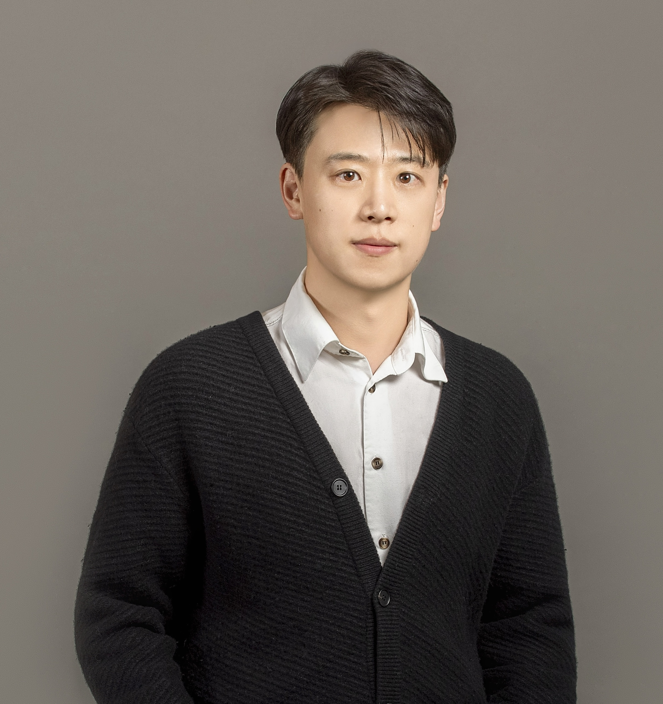

I'm an Assistant Professor in Statistics and Data Science at Northwestern University, where I lead the REAL Lab. I'm also a faculty member of the IDEAL Institute. Prior to joining Northwestern, I obtained my Ph.D. degree in Computer Science at Arizona State University under the supervision of Prof. Huan Liu.
My research interests are generally in data mining, machine learning, and large foundation models. My research focus is to build reliable and efficient AI systems for autonomous decision-making. Meanwhile, I am passionate about developing knowledge-guided AI algorithms especially based on GNNs and LLMs to advance high-impact applications in various domains, such as healthcare/biomedicine, and urban/environmental computing.
Wanna be REAL researchers? I'm always looking for highly motivated students/interns to join my REAL lab!
kaize.ding[AT]northwestern.edu
2006 Sheridan Rd, Room 102